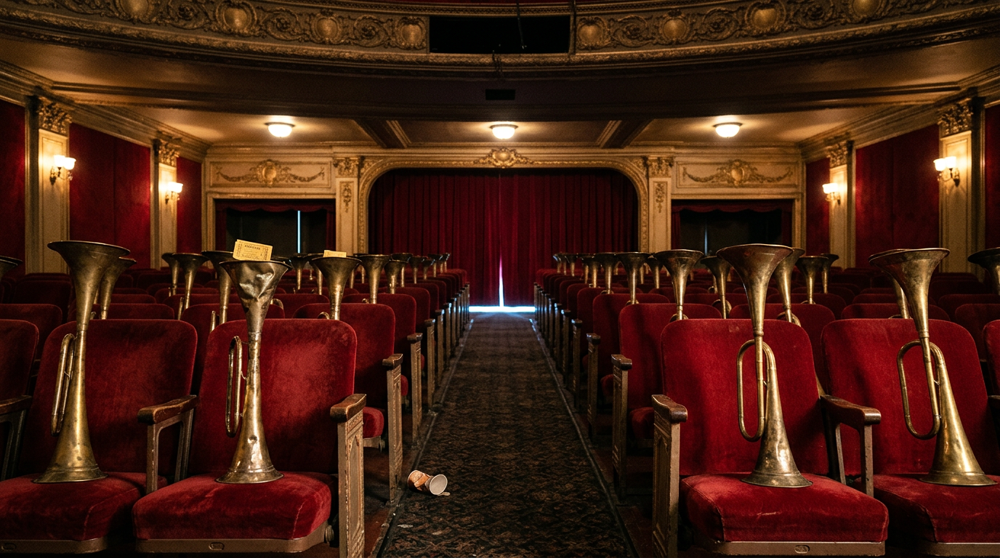

Why Musicals Open With One Big Ensemble Song
My Three-Year-Old Asked Who Was Singing, So I Delivered a Broadway Lecture and My Wife Filed a Noise Complaint Against My Ego
That’s the question. That has been the question every single day since October started, asked by a three-and-a-half-year-old with the persistence of a tax auditor and the attention span of a moth at a porch light.
The song is “This Is Halloween.” The movie is The Nightmare Before Christmas. And she has never seen the movie. Let me say that again for the people in the back drinking the eleven-dollar Merlot: not one frame of it, start to finish, as a film.
She has seen flashes. A tall skeleton in a pinstripe suit. A rag doll stitched together like a quilt that lost a bar fight. A burlap sack of a villain with the voice of a casino lounge at 3 a.m. And three small trick-or-treaters in masks who are, very clearly, a juvenile criminal enterprise with a bathtub.
From those flashes and one song, she has assembled the entire cast in her noggin. Who’s this? Who’s singing that? Is that the skeleton? Who’s the scary one? Why is the scary one singing NOW?
Also, worth mentioning: we live in Buenos Aires. October here is spring. Jacarandas, sunshine, people eating ice cream on the sidewalk. She is running a full Halloween investigation in a season that is actively trying to make it impossible. That’s dedication. That’s a future prosecutor.
So I sat her down and explained it. All of it. The opening number, the ensemble, the epoch, the leitmotif. To a person who still negotiates with her socks.
My wife heard the lesson in progress and filed a two-part report.
Part one: she’s not getting it.
Part two: I’m not doing this for the kid. I’m doing it because I like the sound of my own voice.
Both correct. The kid was not getting it. The kid was waiting for me to stop talking so she could hear the song again. Guilty. Fully. It’s also why this blog exists. So deal with it, and suck a sack of dicks.
Now sit down. The overture’s starting, and you’re in my seat.
The First Song Is a Contract
Here’s what I told a toddler, slightly cleaned up for adults.
Most musicals open with an ensemble number. When they don’t, they open with one narrator doing the work of an ensemble, which is the same trick wearing a single hat. Either way, the job is identical. In about three minutes, the opening number tells you:
When you are. Where you are. Who you’re about to meet. What the music will sound like for the next two hours. And what the show actually believes about the world.
It also plants the leitmotifs, which is the fancy Wagnerian word for little melodic fingerprints that belong to a character or an idea and come back later wearing different clothes. You don’t notice them the first time. You’re not supposed to. They’re seeds. The show waters them for two hours and then, in Act Two, a tune you heard in minute four walks out of the wings as a tree and you cry and don’t know why.
Think of the opening number as the maître d’. It takes your coat, reads you the specials, points out the exits, and lets you know which of the other guests has already stabbed somebody.
Don’t take my word for it. I’m not freaking Sondheim. I am a man who has pressed replay on one Danny Elfman song roughly four hundred times in three weeks. Take Sondheim’s.
In 1962, A Funny Thing Happened on the Way to the Forum was dying out of town. It’s a farce. Togas, slamming doors, a dead courtesan who isn’t dead. And the audiences weren’t laughing. The opening song at the time was a sweet, gentle number called “Love Is in the Air.” Jerome Robbins came in to doctor the show and put his finger right on it: the first song was promising the audience a romance, so they sat there waiting for a romance and wondering why everybody kept falling down. Sondheim threw it out and wrote “Comedy Tonight,” a number whose entire job is to announce, at volume, what kind of evening this is.
Same script. Same jokes. Suddenly they landed.
That’s the rule. The opening number doesn’t decorate the show. It tells you how to watch it. Lie in the first song and the whole night pays the bill.
Robbins, by the way, pulled the same move two years later on Fiddler on the Roof, badgering the writers with one question over and over: what is this show ABOUT? Eventually somebody said “tradition.” So the show opens with a song called “Tradition,” in which Tevye turns to the audience and explains the village, the roles, the rules and the roof. It’s the most honest opening number ever written. It’s practically a terms-of-service agreement with a fiddle on top.
Six Openers, One Trick
Now the case files. I laid these out for the kid. She mostly wanted to know who was singing. Fair.
”All That Jazz” · Chicago (1975). Kander and Ebb, Bob Fosse. The title already told you the city, so the song doesn’t waste a breath on geography. It gives you the decade instead. Gin. Jazz. Rouge. Garters. Murder as a career move. By the end of it you know the theology of the show, which is that in this town you can kill a man and get a headline for it, and the headline is the point. Velma Kelly opens it. Velma Kelly, for the record, already did the murder.
”Circle of Life” · The Lion King (1994). Elton John and Tim Rice, with Lebo M’s call in Zulu ripping the sky open in the first second. Every animal on the savanna walks to Pride Rock to look at a baby. In four minutes you’ve got the hierarchy, the instinct, the food chain set to drums, and the gospel of the place: everything has its spot. And tucked into Tim Rice’s lyric, between the soaring and the sailing, is a line about the ones who have to live with the scars. Plural. Lowercase. Innocent as a lamb. The very next scene is the one guy who skipped the ceremony, and his name is Scar. The opening number builds the circle, drops his name in it like a coin in a fountain, and then lets you watch him crack it. That’s how you introduce a villain without him singing a note.
”Arabian Nights” · Aladdin (1992). A peddler, alone, doing the work of a whole chorus. Desert, caravan, heat, danger, a city of thieves and magic, and the tone of a carnival barker who’s about to sell you a lamp. One voice, full ensemble job. (Footnote with teeth: one line was rewritten for the 1993 home video release after complaints from the American-Arab Anti-Discrimination Committee. An opening number tells you what a show believes. Sometimes it tells you more than it meant to.)
”The Family Madrigal” · Encanto (2021). Technically one singer, Mirabel, with a little help from Abuela. But it’s an ensemble number in a trench coat: a dozen relatives, each one introduced with their magic gift, over Colombian rhythms, in a house that is also a character. Miranda wrote it EARLY, before most of the movie existed, and used it as a map for every character the film would later unpack. Abuela’s section wasn’t even in the first draft. The filmmakers set themselves one question: how do you tell a story about a large family without the audience needing a spreadsheet? Answer: you hire the cousin who knows everyone, hand her the mic at the wedding, and let her point. That’s Tía Pepa, she controls the weather, don’t upset her. That’s Luisa, she can lift a church. That’s Bruno. We’ll get to Bruno.
”Alexander Hamilton” · Hamilton (2015). Aaron Burr steps out and asks how a bastard orphan ended up on the ten-dollar bill. Then every principal takes a line. Washington, Jefferson, Madison, Eliza, Angelica, Mulligan, Lafayette, Laurens. Epoch: the Revolution. Vocabulary: hip-hop and Broadway in the same bed. Cast: every single one of them, introduced in under four minutes. And then Burr tells you, out loud, in the first song, that he’s the one who shoots him.
Read that again. The opener SPOILS THE ENDING. And it doesn’t matter, because the contract was never “will he die.” The contract is “here’s how.” You buy the ticket anyway. Millions did.
”Another Day of Sun” · La La Land (2016). Justin Hurwitz, with lyrics by Pasek and Paul. A Los Angeles freeway jammed solid, and the drivers get out of their cars and dance on the roofs. Place: LA. People: dreamers stuck in traffic. Theme: the dream and the gridlock are the same road. And the meta-message, underlined in neon: yes, this is a musical, it knows it’s a musical, please don’t be weird about it.
”Prologue: Into the Woods” · Into the Woods (1987). Sondheim again, because of course it’s Sondheim. A narrator, a ticking clock and two words: “I wish.” Cinderella wishes. Jack wishes. The Baker and his Wife wish. The Witch next door has opinions about all of it. In about twelve minutes every fairy tale you were read at bedtime gets tangled into the same forest, and the contract is right there in the first line: everybody wants something. Act Two is the bill.
And then there’s the one that started this whole thing.
“This Is Halloween” does every job on the list. It introduces the town, then the residents (the thing under the bed, the thing under the stairs, the vampires, the mayor with two faces), then the musical palette (oompah, carnival, a choir of whatever lives in your closet), and THEN it sings about the Pumpkin King before he arrives. The villain-level celebrity gets a hype man made of an entire town.
Which is exactly why my daughter knows the cast of a movie she hasn’t watched. The song is a cast list with a beat. It was built to answer “who’s this?” before she could even ask it. She’s not obsessed with a song. She’s obsessed with a contract, and she’s reading the fine print.
STOP.
Pull over. Hazards on. You thought this was a post about how musicals start. It’s actually a post about how they come back. I took you down the on-ramp and then parked us in the middle of the show like a guy who missed his exit and decided to live there.
Everybody Back On Stage: The Number That Comes Back in the Middle

Here’s the part I’m proudest of explaining to someone who wears light-up shoes.
The ensemble doesn’t just open the show. Somewhere in the middle, it comes back. Everybody on stage at once, sometimes all singing different things, recapping what’s happened and loading the gun for what’s about to. It’s the show turning around in the driver’s seat and asking if everybody’s okay back there.
”Masquerade” · The Phantom of the Opera. This one opens Act Two, which is the most practical piece of songwriting on this list. The audience has just come back from the bar with a plastic cup of white wine and has forgotten half of Act One. So the whole company comes out in disguise at a New Year’s ball, after a time jump, and reintroduces themselves, the relationships, the fear, and the guy everyone’s pretending isn’t coming. Then he comes.
”Non-Stop” · Hamilton. The Act One finale. Every motif from the first act gets braided into one number. Hamilton, Burr, Eliza, Angelica, Washington, all singing their own melodies on top of each other, which is called counterpoint and is basically a family dinner where everyone is right. It’s a recap and a cliffhanger in the same breath. The intermission lights come up and you’re already annoyed you have to pee.
”We Don’t Talk About Bruno” · Encanto. The midpoint. The family that opened the movie in one tidy song comes back, and now each of them tells you a different version of the same uncle. Recap, rumor, prophecy, a bassline you can’t get out of your skull. It’s the opening number’s evil twin: the first song said here’s who we are, this one says here’s what we won’t admit. It went to No. 1 on the Billboard Hot 100 in early 2022, knocked Adele off the top, and became the first Disney animated song to top that chart since “A Whole New World” in 1993. A song about not talking about something became the most-talked-about song in the country. Somewhere, Bruno is smiling into a rat.
”Cell Block Tango” · Chicago. Six murderesses, six alibis, one rhythm. This one sits early in Act One rather than dead center, so call it the show’s second ensemble flex rather than its midpoint. But it’s doing the same job: it takes the theology “All That Jazz” planted (murder as performance) and puts six witnesses on the stand to swear by it.
And yes, Les Mis does it too. “One Day More” closes Act One with practically the entire cast singing their own song at once. If counterpoint had a church, that would be the altar.
Okay, But Not Every Show Opens With a Crowd
The obvious objection, and it’s a good one.
Oklahoma! (1943) opened with a single cowboy singing offstage while an old woman churned butter. No chorus line. No kick line. For its time that was a scandal, because Broadway openers were supposed to be a stage full of legs. It changed the whole art form.
Phantom doesn’t open with a song at all. It opens with an auction.
Fair. So here’s the honest version of the rule: it’s not about headcount. It’s about the job. That lone cowboy still tells you the time, the place, the light, the mood and the musical language of the evening in one breath. The auction is a prologue that hands you the chandelier so the overture can crash into it. Whether it’s forty people or one guy on a horse, the first number signs the contract. The crowd is just the most efficient way to get every signature at once.
Curtain
Halloween is eight days out. In spring. In Buenos Aires.
Tonight she’ll ask me again who’s singing. And now I have the real answer, which is: everyone. That’s the point. The song isn’t for one character. It’s the whole town shaking your hand at the gate before the gate swings shut behind you.
As for my wife’s report, both parts stand. The kid still isn’t getting it. And I like the sound of my own voice.
But in my defense, so does every opening number ever written. That’s the job description. Walk to the front of the stage, open your mouth, and announce, loudly, to a room full of people who didn’t ask, that you are about to take up their entire evening.
Which is what this was. Two thousand words, a cast of one, performed for a three-and-a-half-year-old and a few thousand strangers. Standing ovation from neither. Encore anyway.
Quick Questions From the Cheap Seats
What is an opening number in a musical?
The first song of the show. Its job is to establish when and where the story happens, introduce the main characters, set the musical style, and tell the audience what kind of show they’re watching.
Why do so many musicals start with an ensemble song?
Because an ensemble can introduce the whole world at once: the place, the community, the main characters and the rules. It’s the fastest way to orient an audience before the story narrows to one person.
Who sings “This Is Halloween” in The Nightmare Before Christmas?
The citizens of Halloween Town, voiced by the film’s cast, sing it as a group. Danny Elfman, who wrote the songs, also provided Jack Skellington’s singing voice elsewhere in the film, and Jack makes his entrance as the number winds up.
What is the “Comedy Tonight” story?
During the 1962 tryout of A Funny Thing Happened on the Way to the Forum, audiences weren’t laughing. Jerome Robbins identified the gentle opening song as the problem because it promised a romance. Stephen Sondheim replaced it with “Comedy Tonight,” and the show’s jokes started landing.
What’s a mid-show ensemble number?
A number where most of the cast returns, often around the midpoint or an act break, to recap the story and set up what’s next. Examples include “Masquerade” (Phantom of the Opera), “Non-Stop” (Hamilton), “One Day More” (Les Misérables) and “We Don’t Talk About Bruno” (Encanto).
Do all musicals open with an ensemble?
No. Oklahoma! famously opens with one cowboy singing offstage. But the first number still does the same job of setting time, place and tone.